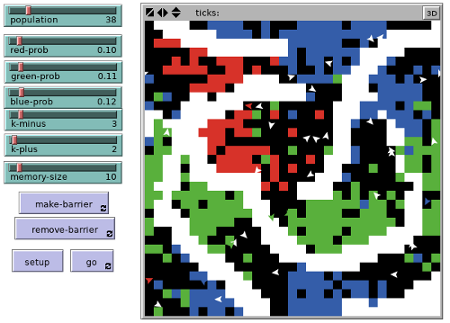

NetLogo
You’ll find the NetLogo Manual to be useful.
http://ccl.northwestern.edu/netlogo/5.0.1/
Building the “ant brood sorting” model
The model is described in the Ant intelligence notes.
NetLogo code

Each turtle will have a seen variable that will be a list.
turtles-own [ seen ]
Each patch will have a barrier? variable that will be true or false
depending on whether the patch is a barrier.
patches-own [ barrier? ]
The “setup” button will run this procedure. First, the NetLogo
procedure clear-all clears the screen. Then, the setup-patches and
setup-turtles procedures (which we’ll create) are executed.
to setup clear-all setup-patches setup-turtles end
The patches will have colors or be black if they are blank space. The probability of being some color or black depends on sliders. All patches by default are not barriers.
to setup-patches ask patches ;; make each patch do the following [ set barrier? false ;; all start as non-barriers ifelse random-float 1.0 < red-prob ;; possibly turn red [ set pcolor red ] [ ifelse random-float 1.0 < (red-prob + green-prob) ;; possibly turn green [ set pcolor green ] [ ifelse random-float 1.0 < (red-prob + green-prob + blue-prob) ;; possibly turn blue [ set pcolor blue ] [ set pcolor black ] ] ] ] ;; otherwise, not red, green, or blue end
Now we set up the turtles (ants):
to setup-turtles create-turtles population ;; this is a slider variable ask turtles [ setxy 0 0 ;; put each turtle (ant) in the middle set seen [] ;; set its "seen" list to the empty list set color white ] ;; make it white end
The “go” button moves each ant around the space, avoiding barriers (how to draw barriers is described below). An ant may choose to pickup or drop a colored object if appropriate. But first we “look” by updating the ant’s “seen” list.
to go ask turtles [ look drop pickup avoid-barrier ] end
This is how the ant “looks” (note that the memory-size variable is
set by a slider):
to look if pcolor != black and memory-size > 0 ;; if the ant is on a color, and it has a memory [ if length seen >= memory-size ;; if the seen list is full... [ set seen but-last seen ] ;; drop the last item in the list set seen fput pcolor seen ] ;; put the item seen now at the front of the list (fput) end
The ant may choose to “pickup” an object. Picking up an object actually just turns the patch to black, and turns the ant to the color that it “picked up.”
to pickup ;; if the ant is white (not holding an object), ;; and the patch color (pcolor) is not black, ;; and the patch color is not white (which is a barrier) if color = white and pcolor != black and pcolor != white ;; then let f be the value (number of items in 'seen' list matching this color) ;; divided by the size of seen list; ;; we use 'filter [? = pcolor] seen' to reduce the 'seen' list to only ;; those items that equal the patch color [ let f (length (filter [? = pcolor] seen)) / (length seen) ;; now choose a random number, and see if it is less than ;; the value (K+ / (K+ + F))^2 where K+ is a constant set by a slider if random-float 1.0 < (k-plus / (k-plus + f)) ^ 2 [ set color pcolor ;; set ant color to patch color set pcolor black ] ] ;; set patch color to black end
Dropping is the opposite:
to drop ;; if the ant is not white (i.e., if it is holding an object), ;; and the patch color is black if color != white and pcolor = black ;; figure out how many seen objects have the same color as the ant [ let f (length (filter [? = color] seen)) / (length seen) ;; calculate (F / (K- + F))^2 where K- is a constant set by a slider if random-float 1.0 < (f / (k-minus + f)) ^ 2 [ set pcolor color ;; set patch color to color of ant set color white ] ] ;; change ant color back to white end
Now we just need to make the ant move:
to avoid-barrier ;; if there exists a patch ahead (in whatever direction the ant is facing) ;; and the patch ahead is not a barrier ;; (the code ([barrier?] of patch-ahead 1) gets the value of the barrier? ;; variable for the patch) if (nobody != patch-ahead 1) and ([barrier?] of patch-ahead 1) [right 90 + random 180] ;; then turn 90-degrees plus a random amount more right random 40 ;; turn a random amount forward 1 ;; move forward; note, we may have turned towards a different barrier; oh well end
The “make-barrier” and “remove-barrier” buttons on the interface call
these two procedures. These procedures figure out where you click your
mouse and set the barrier? variable to true/false on those patches
(and turn them white/black):
to make-barrier if mouse-down? ;; continually ask if the mouse is being clicked [ ask patches ;; for all patches that are under the mouse, ... [ if ((abs (pxcor - mouse-xcor)) < 1) and ((abs (pycor - mouse-ycor)) < 1) [ set pcolor white ;; turn white set barrier? true ] ] ] ;; and set barrier? to true end to remove-barrier if mouse-down? [ ask patches [ if ((abs (pxcor - mouse-xcor)) < 1) and ((abs (pycor - mouse-ycor)) < 1) [ set pcolor black set barrier? false ] ] ] end